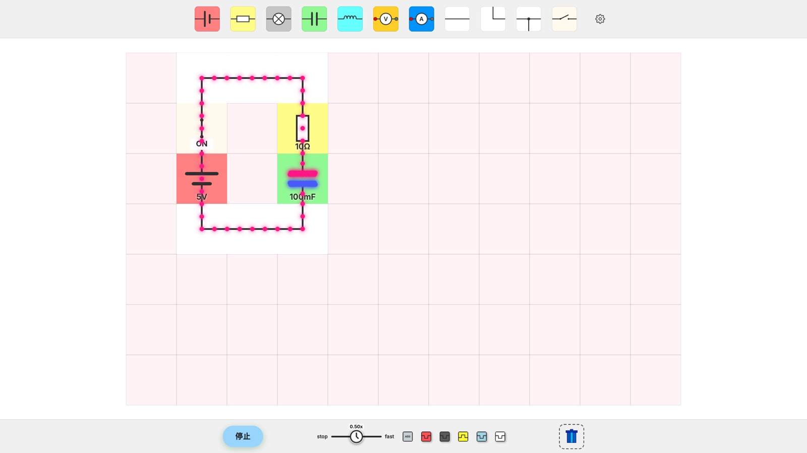
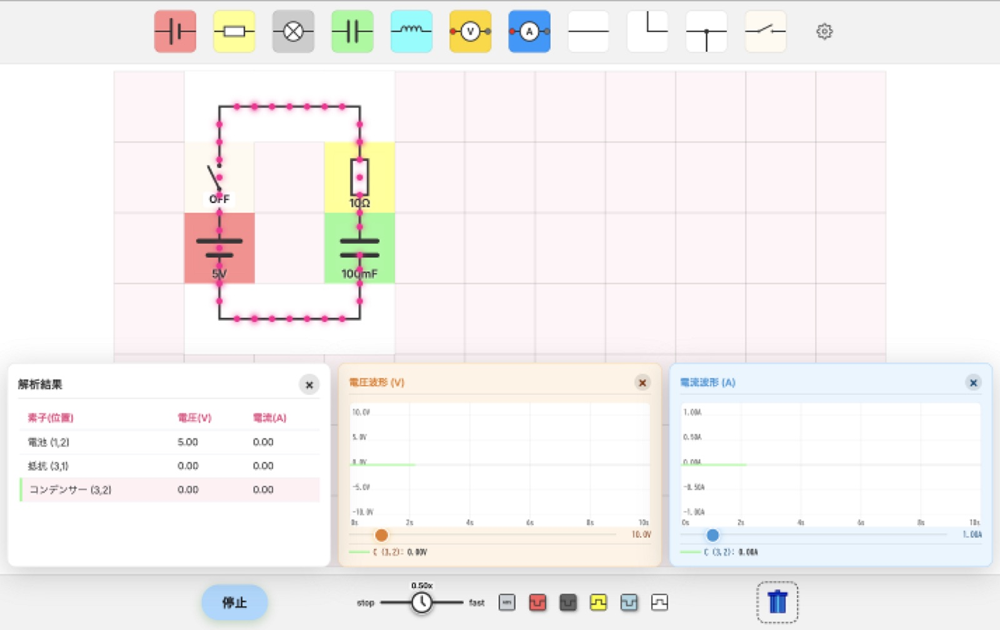
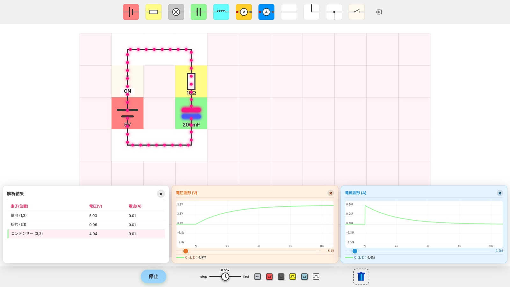
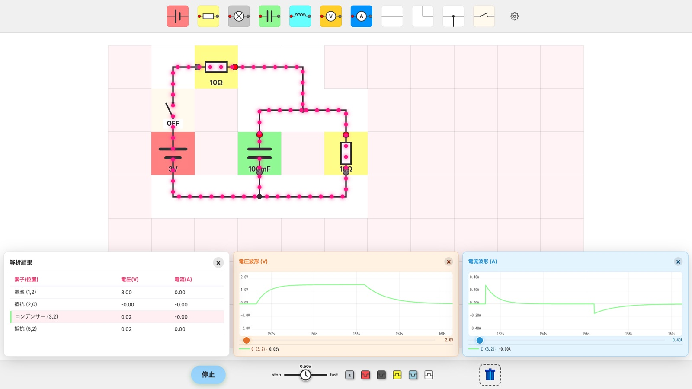
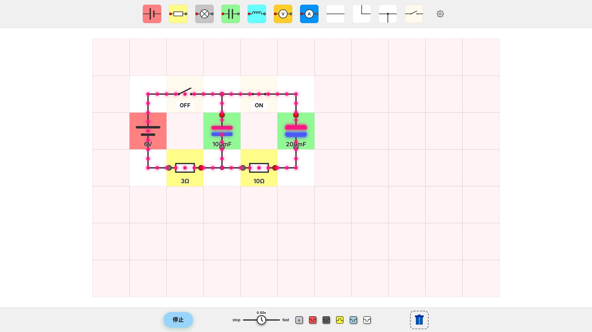
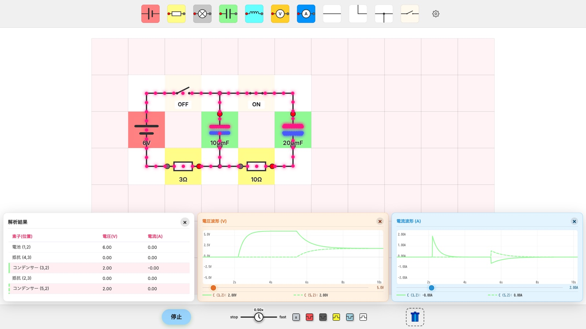
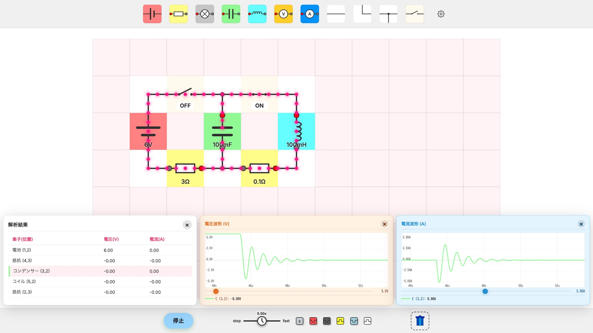

コンデンサの過渡現象
課題①
Moodle から「第 21 回課題 課題①②の回路」のリンクをクリックすると，図１のような回路ができている。手順1～4を行い，(a)～(b)の問いに答えよ。
- 左下の（OK）ボタンを押す。
- スイッチを ON にする。
(a)電荷（赤い粒）が移動し，電流が流れるが次第にどうなるか。下の空欄に答えよ。
解答例
電荷の移動は次第にゆっくりになり，電流は，十分に時間が経過すると流れなくなる。
ポイント はじめはコンデンサに電荷がないので，電荷がどんどん移動する（15 で学んだ「導線」と見なせる状態）。電荷がたまるにつれて移動しにくくなり，満タン（Max）になると電流が流れなくなる（「無限 Ω の抵抗」と見なせる状態）。
(b)十分に時間が経過したとき，コンデンサにたまった電荷はどうなっているか。そのとき回路の様子をスクリーンショットし，下の空欄に貼り付けよ。もし，やり直したいときは，（停止）ボタンを押す→スイッチ OFF→手順1に戻る。
解答例

コンデンサの上の極板に＋の電荷（赤），下の極板に－の電荷（青）がたまっている。電荷が満タンになったので，導線の電荷はもう移動していない。
- スイッチを OFF にする。
- （停止）ボタンを押す。
課題②
課題①の手順3，4が済んでいるか確認し，同じ回路でシミュレーションを行う。手順1～10を行い，(a)～(e)の問いに答えよ。
- （OK）ボタンを押す。
- 右下の白いボタン をクリックし， にすると，解析結果が表示される。
- 解析結果の「コンデンサー」をクリックすると，電圧と電流のグラフが図２のように表示される。

- スイッチを ON にし，グラフを観察する。
(a)このとき，コンデンサの電圧と電流の変化の様子がわかるように，画面をスクリーンショットし，下の空欄に貼り付けよ。もし，やり直したいときは，（停止）ボタンを押す→スイッチ OFF→手順1に戻る。
解答例
(b)コンデンサの電圧の変化と電流の変化は，それぞれどのような特徴があるかグラフから言えることを下の空欄に答えよ。
解答例
| 電圧 | スイッチを入れた瞬間は，0 V であるが，次第に増加していき，十分に時間が経過すると，5 V となる。 |
|---|---|
| 電流 | スイッチを入れた瞬間は，0.50 A であるが，次第に減少していき，十分に時間が経過すると，0 A となる。 |
ポイント スイッチを入れた瞬間の電流は，コンデンサを導線と見なして \(5.0 \div 10 = 0.50\,\unit{A}\)。十分に時間が経過すると電流は 0 で抵抗の電圧も 0 になるので，コンデンサの電圧は電池と同じ 5 V になる（15 RC直流回路と同じ考え方）。その間の変化は，どちらも初めは急で，だんだんゆるやかになる。
もっと詳しく：グラフの式を回路方程式から導く見たい人は開いてね
1．回路方程式を立てる 電池の電圧を \(V\)，抵抗を \(R\)，静電容量を \(C\)，時刻 \(t\) でのコンデンサの電荷を \(q\)，電流を \(i\) とする。コンデンサの電圧は \(\dfrac{q}{C}\)。回路を1周すると，電池で上がった電圧 \(V\) は，抵抗で \(Ri\)，コンデンサで \(\dfrac{q}{C}\) だけ下がって元に戻る（キルヒホッフの第2法則）。
電流は，コンデンサにたまる電荷が増える速さなので，
②を①に入れると，\(q\) だけの式（回路方程式）になる。
2．「まだたまっていない電荷」で書き直す 十分に時間が経過すると電流は 0 になるので，①より最後にたまる電荷は \(CV\)（満タン）。そこで，満タンまでの残り \(u = CV - q\) とおく。\(CV\) は一定なので \(\dfrac{du}{dt} = -\dfrac{dq}{dt}\)。回路方程式を \(R\,\dfrac{dq}{dt} = V - \dfrac{q}{C} = \dfrac{CV - q}{C}\) と変形して \(u\) で書くと，
つまり，微分すると自分自身の \(-\dfrac{1}{RC}\) 倍になる関数 \(u\) を探せばよい。
3．合成関数の微分で見つける \(\left(e^x\right)' = e^x\)（微分しても変わらない）と，合成関数の微分法を使う。\(s = -\dfrac{t}{RC}\) とおくと，\(e^{-\textstyle\frac{t}{RC}} = e^{s}\) は \(s\) を通して \(t\) の関数になっているので，
ここで \(\dfrac{d\,e^{s}}{ds} = e^{s}\)，\(\dfrac{ds}{dt} = -\dfrac{1}{RC}\) なので，
微分すると自分自身の \(-\dfrac{1}{RC}\) 倍になった。定数 \(A\) をかけても同じなので，\(u = A\,e^{-\textstyle\frac{t}{RC}}\) は③を満たす。
4．ほかに答えがないことを確かめる ③を満たす \(u\) に対して \(w = u\,e^{\textstyle\frac{t}{RC}}\) とおき，積の微分と合成関数の微分で \(t\) で微分する。③の \(\dfrac{du}{dt}\) を入れると，
微分が常に 0 なので \(w\) は一定の値 \(A\)。よって \(u = A\,e^{-\textstyle\frac{t}{RC}}\) の形しかない。
5．はじめの条件で \(A\) を決める スイッチを入れた瞬間（\(t = 0\)）はコンデンサに電荷がないので \(q = 0\)，つまり \(u = CV\)。\(e^0 = 1\) より \(A = CV\)。したがって，コンデンサの電荷は
コンデンサの電圧は，これを \(C\) で割って
電流は②より \(q\) を \(t\) で微分する。\(CV\) は定数なので，3. の合成関数の微分を使うと，
6．この回路の値を入れる \(V = 5.0\,\unit{V}\)，\(R = 10\,\unit{Ω}\)，\(C = 100\,\unit{mF} = 0.1\,\unit{F}\) より \(RC = 1.0\,\unit{s}\)，\(CV = 0.50\,\unit{C}\)。
\(t = 0\) では電圧 0 V，電流 0.50 A。\(t\) が大きくなると \(e^{-t}\) は 0 に近づくので，電圧は 5.0 V，電流は 0 A に近づき，上の解答例のグラフの特徴と一致する。\(\qquad\blacksquare\)
\(RC\) が (e) で調べる時定数 \(\tau\)。\(t = \tau\) のとき \(e^{-1} \fallingdotseq 0.37\) なので，電圧は最終値の約 63%（この回路では \(t = 1.0\) s で約 3.2 V），電流は最初の約 37%（約 0.18 A）になる。
- （停止）ボタンを押す。
- スイッチを OFF にする。
- コンデンサのパネルをダブルクリックし，静電容量を 100 mF から 200 mF に変更する。
- （OK）ボタンを押す。
- 解析結果の「コンデンサー」をクリックし，電圧と電流のグラフが表示する。
- スイッチを ON にし，グラフを観察する。
(c)このとき，コンデンサの電圧と電流の変化の様子がわかるように，画面をスクリーンショットし，下の空欄に貼り付けよ。もし，やり直したいときは，手順5に戻る。
解答例

(d)コンデンサの電圧や電流の変化は，(a) のときに比べ，(c) はどうなったか下の空欄に答えよ。
解答例
(a) のときに比べ，(c) ではコンデンサの充電が完了するまでの時間（電流が流れなくなるまでの時間）が長くなった。
(e)コンデンサの過渡現象における「時定数」についてインターネット等で調べ，下の空欄に示せ。ただし，次の４点については必ず示すこと。
- 概要
- 定常状態と時定数の関係
- (d) の解答となった理由を時定数の式との関係
- 上記について調べた情報源の URL と Web ページのタイトル
解答例
概要
RC 直列回路の時定数 \(\tau\)〔s〕は，抵抗 \(R\)〔Ω〕と静電容量 \(C\)〔F〕の積で表される。
時定数は過渡現象の変化の速さの目安である。充電のときは，スイッチを入れてから \(\tau\) だけ時間が経過すると，コンデンサの電圧は最終値（電源電圧）の約 63.2% に達し，電流は最初の値の約 36.8% まで減少する。\(\tau\) が大きいほど，変化はゆっくりになる。
定常状態と時定数の関係
コンデンサの電圧は，\(2\tau\) で約 86.5%，\(3\tau\) で約 95.0%，\(5\tau\) で約 99.3% となり，実際には 100% にはならない。そのため，実用上は，時定数の 5 倍（\(5\tau\)）以上の時間が経過すると，電圧と電流が最終値に達した定常状態とみなす。
課題②の回路では，次のようになるので，約 5 s で定常状態になる。
(d) の理由
静電容量を 100 mF から 200 mF にすると，時定数が 2 倍になる。
定常状態になるまでの時間（約 \(5\tau\)）も約 5 s から約 10 s へと 2 倍になるため，充電が完了するまでの時間（電流が流れなくなるまでの時間）が長くなった。
情報源
- Web ページのタイトル：時定数 - Wikipedia
URL：https://ja.wikipedia.org/wiki/時定数 - Web ページのタイトル：「ADALM1000」で、SMU の基本を学ぶトピック 4: RC 回路の過渡応答
URL：https://ez.analog.com/jp/a/studentzone/ST3707/adalm1000-smu-4-rc
課題③
Moodle から「第 21 回課題 課題③の回路」のリンクをクリックすると，図３のような回路ができている。手順1～6を行い，(a)～(d)の問いに答えよ。
- 左下の（OK）ボタンを押す。
- スイッチを ON にし，電荷の動きを観察する。
(a)このとき，電流の流れはどのように変化するか下の空欄に答えよ。もし，やり直したいときは，（停止）ボタンを押す→スイッチ OFF→手順1に戻る。
解答例
スイッチを入れてから，時間が経過するに連れて，コンデンサに流れる電流が減少していった。十分に時間が経過し，コンデンサに電流が流れなくなると，２つの抵抗を直列接続した状態での回路のようになった。
- スイッチを OFF にし，電荷の動きを観察する。
(b)このとき，電流はどのように流れるか下の空欄に答えよ。もし，やり直したいときは，（停止）ボタンを押す→手順1に戻る。
解答例
電池と上の抵抗には電流が流れなくなったが，コンデンサと右側の抵抗からなる回路には，コンデンサにたまった電荷が右側の抵抗に流れた。十分に時間が経過すると，電流が流れなくなった。
- 右下の白いボタン をクリックし， にすると，解析結果が表示される。
- 解析結果の「コンデンサー」をクリックすると，電圧と電流のグラフが課題②の図２のように表示される。
- スイッチを ON にし，定常状態になったら，OFF にし，グラフを観察する。
(c)このとき，コンデンサの電圧と電流の変化の様子がわかるように，画面をスクリーンショットし，下の空欄に貼り付けよ。もし，やり直したいときは，（停止）ボタンを押して，手順5に戻る。
解答例

(d)(c) について，コンデンサに流れる電流の向きおよび，その大きさについて考察し，下の空欄に答えよ。
解答例
ON（充電）
コンデンサに電荷がたまる向き（グラフの正の向き）に流れる。直後はコンデンサを導線と見なせるので，右の 10 Ω には流れず，コンデンサに次の電流が流れる。
その後，次第に減少して 0 A になる（このときコンデンサの電圧は 1.5 V）。
OFF（放電）
ON のときと逆向き（グラフの負の向き）に流れる。コンデンサにたまった電荷が右の 10 Ω を通って放電するためで，直後の大きさは次のようになる。その後，次第に減少して 0 A になる。
変化の速さ
放電のほうがゆっくり減少する。時定数が，充電では 10 Ω と 10 Ω の並列（5 Ω），放電では右の 10 Ω だけになり，放電のほうが大きいためである。
課題④
Moodle から「第 21 回課題 課題④の回路」のリンクをクリックすると，図４のような回路ができている。手順1～15を行い，(a)～(c)の問いに答えよ。
- 左下の（OK）ボタンを押す。
- \(\text{S}_1\) を ON にし，コンデンサ \(\text{C}_1\) を充電する。
- \(\text{S}_1\) を OFF にし，\(\text{S}_2\) を ON にし，電荷の動きを観察する。
(a)コンデンサにたまった電荷はどうなっているか。そのとき回路の様子をスクリーンショットし，下の空欄に貼り付けよ。もし，やり直したいときは，（停止）ボタンを押して，\(\text{S}_1\) と \(\text{S}_2\) を OFF にして，手順1に戻る。
解答例

\(\text{C}_1\) にたまっていた電荷の一部が \(\text{C}_2\) に移り，2つのコンデンサで電荷を分け合っている。
- （停止）ボタンを押す。
- \(\text{S}_1\) と \(\text{S}_2\) を OFF にする。
- （OK）ボタンを押す。
- 右下の白いボタン をクリックし， にすると，解析結果が表示される。
- 解析結果の「コンデンサー」を２つともクリックすると，電圧と電流のグラフが表示される。
- グラフが，実線と破線の２本があることを確認する。
- \(\text{S}_1\) を ON にし，コンデンサ \(\text{C}_1\) を充電する。
- \(\text{S}_1\) を OFF にし，\(\text{S}_2\) を ON にし，グラフを観察する。
(b)このとき，２つのコンデンサの電圧と電流の変化の様子がわかるように，画面をスクリーンショットし，下の空欄に貼り付けよ。もし，やり直したいときは，手順4に戻る。
解答例

\(\text{C}_1\)（実線）は 6 V まで充電されたあと，\(\text{S}_2\) を ON にすると電圧が下がる。\(\text{C}_2\)（破線）は 0 V から上がり，どちらも 2.0 V で等しくなる。
- これから，\(\text{S}_1\) と \(\text{S}_2\) の ON・OFF を繰り返す。\(\text{S}_2\) を OFF にする。
- \(\text{S}_1\) を ON にし，コンデンサ \(\text{C}_1\) を充電する。
- \(\text{S}_1\) を OFF にし，\(\text{S}_2\) を ON にし，グラフを観察する。
- 手順12～14を複数回繰り返す。
(c)複数回繰り返すうちに，２つのコンデンサの電圧はどのように変化していくか下の空欄に答えよ。\(\text{C}_1\)，\(\text{C}_2\) それぞれについて答えること。もし，やり直したいときは，手順4に戻る。
解答例
\(\text{C}_1\)
\(\text{S}_1\) を ON にするたびに 6 V まで充電され，\(\text{S}_2\) を ON にすると \(\text{C}_2\) に電荷を分けて電圧が下がる。
\(\text{C}_2\)
\(\text{S}_2\) を ON にするたびに \(\text{C}_1\) から電荷を受け取り，電圧が段階的に上がる。
電圧の変化
\(\text{S}_2\) を ON にした後は \(\text{C}_1\) と \(\text{C}_2\) の電圧が等しくなる。電荷の合計は保存されるので，その電圧は次のように上がる（\(\text{C}_1\) の電荷は \(0.1\times 6 = 0.6\,\unit{C}\)，2つの静電容量の合計は \(0.1 + 0.2 = 0.3\,\unit{F}\)）。
上がる幅は次第に小さくなる（6 V との差が毎回 \(\dfrac{2}{3}\) になる）。最終的に \(\text{C}_1\)，\(\text{C}_2\) ともに電源電圧の 6 V に近づき，\(\text{S}_2\) を ON にしても電荷が移動しなくなる。
課題⑤
Moodle から「第 21 回課題 課題⑤の回路」のリンクをクリックすると，図５のような回路ができている。手順1～13を行い，(a)～(e)の問いに答えよ。
- 左下の（OK）ボタンを押す。
- \(\text{S}_1\) を ON にし，コンデンサを充電する。
- \(\text{S}_1\) を OFF にし，\(\text{S}_2\) を ON にし，電荷の動きを観察する。
(a)このとき，電流の流れはどのように変化するか下の空欄に答えよ。もし，やり直したいときは，（停止）ボタンを押して，\(\text{S}_1\) と \(\text{S}_2\) を OFF にして，手順1に戻る。
解答例
コンデンサとコイル，0.1 Ω の抵抗からなる回路において，電流が行ったり来たりする（振動する）。
- 右下の白いボタン をクリックし， にすると，解析結果が表示される。
- 解析結果の「コンデンサー」をクリックすると，電圧と電流のグラフが課題②の図２のように表示される。
- \(\text{S}_1\) を ON にし，コンデンサを充電する。
- \(\text{S}_1\) を OFF にし，\(\text{S}_2\) を ON にし，グラフを観察する。
(b)このとき，コンデンサの電圧と電流の変化の様子がわかるように，画面をスクリーンショットし，下の空欄に貼り付けよ。もし，やり直したいときは，（停止）ボタンを押して，\(\text{S}_1\) と \(\text{S}_2\) を OFF にして，手順5に戻る。
解答例
(c)電圧や電流が (b) のような波形となる回路を何というか調べ，下の空欄に答えよ。
解答例
振動回路（減衰振動回路）
- （停止）ボタンを押して，\(\text{S}_1\) と \(\text{S}_2\) を OFF にする。
- 素子をダブルクリックして，コンデンサの静電容量を 500 mF から 100 mF へ，コイルの自己インダクタンス 500 mH から 100 mH に変更する。
- 左下の（OK）ボタンを押す。
- 解析結果の「コンデンサー」をクリックしてグラフを表示する。
- \(\text{S}_1\) を ON にし，コンデンサを充電する。
- \(\text{S}_1\) を OFF にし，\(\text{S}_2\) を ON にし，グラフを観察する。
(d)このとき，コンデンサの電圧と電流の変化の様子がわかるように，画面をスクリーンショットし，下の空欄に貼り付けよ。もし，やり直したいときは，手順8に戻る。
解答例

(e)(b) のときと (d) のときの波形の違いについて「周期」という観点をふまえ考察し，下の空欄に答えよ。
解答例
周期は，(b)（500 mF，500 mH）では約 3.1 s，(d)（100 mF，100 mH）では約 0.63 s で，(d) のほうが周期が短く，速く振動した。振動回路の周期 \(T\) は次の式で表される。
\(L\) と \(C\) をそれぞれ \(\dfrac{1}{5}\) にしたので \(\sqrt{LC}\) が \(\dfrac{1}{5}\) になり，周期も \(\dfrac{1}{5}\) になった。また，(d) のほうが早く減衰している。